Données spatiales
Introduction aux statistiques spatiales
Types d’analyses spatiales
Ce cours présente une introduction à trois types d’analyses spatiales: l’analyse des patrons de points, les modèles géostatistiques et les modèles de données aréales.
Dans l’analyse des patrons de points, nous avons des données ponctuelles représentant la position d’individus ou d’événements dans une région d’étude et nous supposons que tous les individus ou événements ont été recensés dans cette région. Cette analyse s’intéresse à la distribution des positions des points eux-mêmes. Voici quelques questions typiques de l’analyse des patrons de points:
Les points sont-ils disposés aléatoirement ou agglomérés?
Deux types de points sont-ils disposés indépendamment?
Les modèles géostatistiques visent à représenter la distribution spatiale de variables continues qui sont mesurés à certains points d’échantillonnage. Ils supposent que les mesures de ces variables à différents points sont corrélées en fonction de la distance entre ces points. Parmi les applications des modèles géostatistiques, notons le lissage des données spatiales (ex.: produire une carte d’une variable sur l’ensemble d’une région en fonction des mesures ponctuelles) et la prédiction de ces variables pour des points non-échantillonnés.
Les données aréales sont des mesures prises non pas à des points, mais pour des régions de l’espace représentées par des polygones (ex.: divisions du territoire, cellules d’une grille). Les modèles représentant ces types de données définissent un réseau de voisinage reliant les régions et incluent une corrélation spatiale entre régions voisines.
Stationnarité et isotropie
Plusieurs analyses spatiales supposent que les variables sont stationnaires dans l’espace. Comme pour la stationnarité dans le domaine temporel, cette propriété signifie que les statistiques sommaires (moyenne, variance et corrélations entre mesures d’une variable) ne varient pas avec une translation dans l’espace. Par exemple, la corrélation spatiale entre deux points peut dépendre de la distance les séparant, mais pas de leur position absolue.
En particulier, il ne peut pas y avoir de tendance à grande échelle (souvent appelée gradient dans un contexte spatial), ou bien cette tendance doit être prise en compte afin de modéliser la corrélation spatiale des résidus.
Dans le cas de l’analyse des patrons de points, la stationnarité (aussi appelée homogénéité dans ce contexte) signifie que la densité des points ne suit pas de tendance à grande échelle.
Dans un modèle statistique isotropique, les corrélations spatiales entre les mesures à deux points dépendent seulement de la distance entre ces points, pas de la direction. Dans ce cas, les statistiques sommaires ne varient pas si on effectue une rotation dans l’espace.
Données géoréférencées
Les études environnementales utilisent de plus en plus de données provenant de sources de données géospatiales, c’est-à-dire des variables mesurées sur une grande partie du globe (ex.: climat, télédétection). Le traitement de ces données requiert des concepts liés aux systèmes d’information géographique (SIG), qui ne sont pas couverts dans ce cours, alors que nous nous concentrons sur les aspects statistiques de données variant dans l’espace.
L’utilisation de données géospatiales ne signifie pas nécessairement qu’il faut avoir recours à des statistiques spatiales. Par exemple, il est courant d’extraire les valeurs de ces variables géographiques à des points d’étude pour expliquer une réponse biologique observée sur le terrain. Dans ce cas, l’utilisation de statistiques spatiales est seulement nécessaire en présence d’une corrélation spatiale dans les résidus, après avoir tenu compte de l’effet des prédicteurs.
Analyse des patrons de points
Patron de points et processus ponctuel
Un patron de points (point pattern) décrit la position spatiale (le plus souvent en 2D) d’individus ou d’événements, représentés par des points, dans une aire d’étude donnée, souvent appelée la fenêtre d’observation.
On suppose que chaque point a une étendue spatiale négligeable par rapport aux distances entre les points. Des méthodes plus complexes existent pour traiter des patrons spatiaux d’objets qui ont une largeur non-néligeable, mais ce sujet dépasse la portée de ce cours.
Un processus ponctuel (point process) est un modèle statistique qui peut être utilisé pour simuler des patrons de points ou expliquer un patron de points observé.
Structure spatiale totalement aléatoire
Une structure spatiale totalement aléatoire (complete spatial randomness) est un des patrons les plus simples, qui sert de modèle nul pour évaluer les caractéristiques de patrons de points réels. Dans ce patron, la présence d’un point à une position donnée est indépendante de la présence de points dans un voisinage.
Le processus créant ce patron est un processus de Poisson homogène. Selon ce modèle, le nombre de points dans toute région de superficie \(A\) suit une distribution de Poisson: \(N(A) \sim \text{Pois}(\lambda A)\), où \(\lambda\) est l’intensité du processus (i.e. la densité de points). \(N\) est indépendant entre deux régions disjointes, peu importe comment ces régions sont définies.
Dans le graphique ci-dessous, seul le patron à droite est totalement aléatoire. Le patron à gauche montre une agrégation des points (probabilité plus grande d’observer un point si on est à proximité d’un autre point), tandis que le patron du centre montre une répulsion (faible probabilité d’observer un point très près d’un autre).
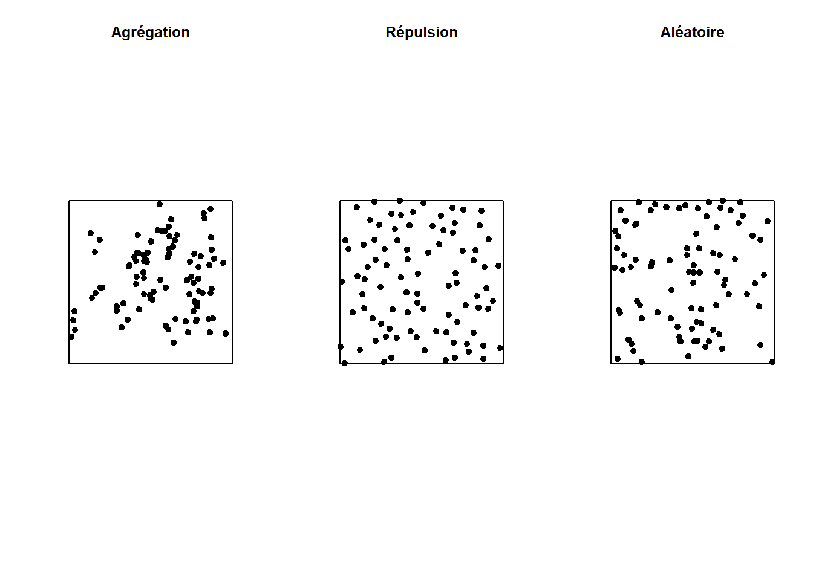
Indice \(K\) de Ripley
L’indice \(K\) de Ripley est une des statistiques sommaires qui permet de comparer un patron de points à une structure spatiale totalement aléatoire.
Cet indice est calculé pour différentes distances \(r\). Pour une distance \(r\) donnée, \(K(r)\) mesure le nombre moyen de points dans un rayon \(r\) tracé autour d’un point du patron, normalisé par l’intensité \(\lambda\).
Pour un patron totalement aléatoire, la moyenne de \(N(r)\) est \(\lambda \pi r^2\), donc en théorie \(K(r) = \pi r^2\). Une valeur de \(K(r)\) supérieure pour un patron donné signifie qu’il y a agrégation des points dans ce rayon, tandis qu’une valeur inférieure signifie qu’il y a une répulsion.
Pour tester si un patron est compatible avec l’hypothèse nulle d’une structure spatiale totalement aléatoire, nous pouvons générer des patrons aléatoires de même intensité que celui observé, puis calculer \(K(r)\) pour chaque simulation afin de créer une enveloppe de valeurs (ex.: contenant 95% des simulations) au-delà de laquelle l’hypothèse nulle sera rejetée.
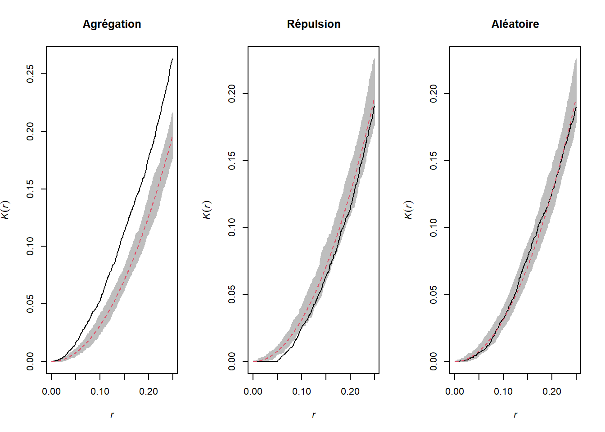
Les graphiques ci-dessus montrent la valeur de \(K(r)\) pour des patrons montrés ci-dessus pour des valeurs de \(r\) allant jusqu’à 1/4 de la largeur de la fenêtre. La courbe pointillée rouge indique la valeur théorique pour un patron aléatoire et la zone grise constitue l’enveloppe produite par 99 simulations. Le patron agrégé montre un excès de voisins jusqu’à \(r = 0.25\) et le patron avec répulsion montre un déficit significatif de voisins pour les petites valeurs de \(r\).
Effet de l’hétérogénéité
Le graphique ci-dessous illustre un patron de points hétérogène, c’est-à-dire qu’il présente un gradient d’intensité (plus de points à gauche qu’à droite).
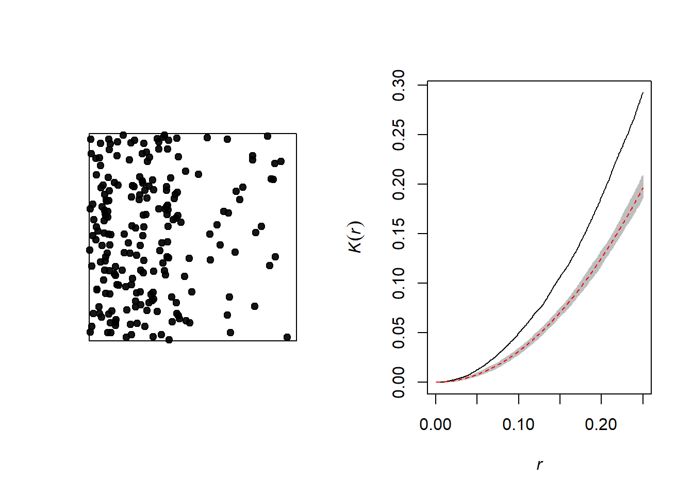
Un gradient de densité peut être confondu avec une agrégation des points, comme on peut voir sur le graphique du \(K\) de Ripley correspondant. Afin de différencier les deux phénomènes, nous pouvons corriger la fonction \(K\) pour que le nombre de voisins soit normalisé non pas par l’intensité globale, mais l’intensité estimée à la position du point.
Pour ce type d’analyse, il faut aussi s’assurer que le modèle nul corresponde à un processus de Poisson hétérogène (c’est-à-dire que les points demeurent indépendants l’un de l’autre, mais leur densité varie dans l’espace).
Voici ci-dessous le graphique du \(K\) pour ce même patron, après avoir tenu compte de l’hétérogénéité.
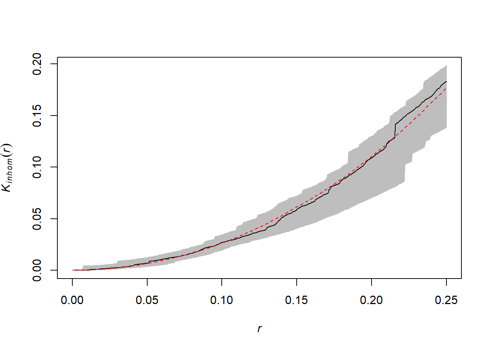
On peut seulement différencier un gradient de densité d’un processus d’agrégation des points si les deux processus opèrent à différentes échelles. En général, nous pouvons retirer l’effet d’un gradient à grande échelle pour détecter une agrégation à plus petite échelle.
Relation entre deux patrons de points
Finalement, considérons un cas où nous avons deux patrons de points, par exemple la position des arbres de deux espèces dans une parcelle (points oranges et verts dans le graphique ci-dessous). Chacun des deux patrons peut présenter ou non des agrégations de points.

Sans égard à cette agrégation au niveau de l’espèce, nous voulons déterminer si les deux espèces sont disposées indépendamment. Autrement dit, la probabilité d’observer un arbre d’une espèce dépend-elle de la présence d’un arbre de l’autre espèce à une distance donnée?
La version bivariée du \(K\) de Ripley permet de répondre à cette question. Pour deux patrons désignés 1 et 2, l’indice \(K_{12}(r)\) calcule le nombre moyen de points du patron 2 à une distance \(r\) d’un point du patron 1, normalisé par la densité du patron 2.
En théorie, cet indice est symétrique, donc \(K_{12}(r) = K_{21}(r)\) et il n’y a pas de différence selon qu’on choisisse les points du patron 1 ou 2 comme points “focaux” pour l’analyse. Cependant, en raison du caractère aléatoire des patrons, la distribution de \(K\) déterminée par simulation d’un modèle nul peut varier dans les deux cas.
Le choix d’un modèle nul approprié est important ici. Afin de déterminer s’il existe une attraction ou une répulsion significative entre les deux patrons, il faut randomiser la position d’un patron relative à celle de l’autre patron, tout en conservant la structure spatiale de chaque patron pris isolément.
Une des façons d’effectuer cette randomisation consiste à décaler l’un des deux patrons horizontalement et/ou verticalement d’une distance aléatoire. La partie du patron qui “sort” d’un côté de la fenêtre est rattachée de l’autre côté. Cette méthode s’appelle une translation toroïdale (toroidal shift), car en connectant le haut et le bas ainsi que la gauche et la droite d’une surface rectangulaire, on obtient la forme d’un tore (un “beigne” en trois dimensions).
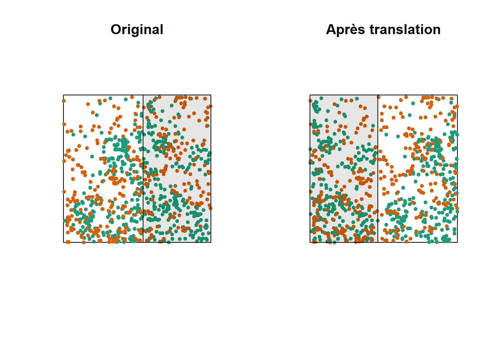
Le graphique ci-dessus illustre une translation du patron vert vers la droite, tandis que le patron orange reste au même endroit. Les points verts dans la zone ombragée sont ramenés de l’autre côté. Notez que si cette méthode préserve de façon générale la structure de chaque patron tout en randomisant leur position relative, elle peut comporter certains inconvénients, comme de diviser des amas de points qui se trouvent près du point de coupure.
Pour en savoir plus
Cette partie visait à illustrer les principaux concepts de l’analyse des patrons de points. Vous êtes invités à consulter des ressources spécialisées, comme le manuel recommandé de Wiegand et Moloney (2013) dans les références, afin d’en apprendre plus sur ces méthodes. Entre autres:
Outre le \(K\) de Ripley, plusieurs autres statistiques sommaires peuvent être utilisées pour décrire des patrons de points, par exemple, la distance moyenne du plus proche voisin.
L’estimation des statistiques sommaires d’un patron de point doit tenir compte des effets de bordure, c’est-à-dire que nous ne connaissons pas tous les voisins des points à proximité de la bordure de la fenêtre d’observation. Nous n’avons pas discuté ici de ces méthodes de correction.
En plus d’analyser la position des points, nous pouvons analyser l’agrégation de caractéristiques des points, ou marques. Par exemple, si un patron spatial d’arbres contient des arbres morts et vivants, nous pouvons vérifier si la mortalité est spatialement aléatoire ou agrégée dans l’espace.
Patrons de points dans R
Pour cet exemple, nous utilisons le jeu de données semis_xy.csv, qui représente les coordonnées \((x, y)\) de semis de deux espèces (sp, B = bouleau et P = peuplier) dans une placette de 15 x 15 m.
semis <- read.csv("../donnees/semis_xy.csv")
head(semis)## x y sp
## 1 14.73 0.05 P
## 2 14.72 1.71 P
## 3 14.31 2.06 P
## 4 14.16 2.64 P
## 5 14.12 4.15 B
## 6 9.88 4.08 BLe package spatstat permet d’effectuer des analyses de patrons de point dans R. La première étape consiste à transformer notre tableau de données en objet ppp (patron de points) avec la fonction du même nom. Dans cette fonction, nous spécifions quelles colonnes contiennent les coordonnées x et y ainsi que les marques (marks), qui seront ici les codes d’espèce. Il faut aussi spécifier une fenêtre d’observation (window) à l’aide de la fonction owin, à laquelle nous indiquons les limites de la placette en x et y.
library(spatstat)
semis <- ppp(x = semis$x, y = semis$y, marks = as.factor(semis$sp),
window = owin(xrange = c(0, 15), yrange = c(0, 15)))
semis## Marked planar point pattern: 281 points
## Multitype, with levels = B, P
## window: rectangle = [0, 15] x [0, 15] unitsLes marques peuvent être numériques ou catégorielles. Notez que pour des marques catégorielles comme c’est le cas ici, il faut convertir explicitement la variable en facteur.
La fonction plot appliquée à un patron de points montre un diagramme du patron.
plot(semis)
La fonction intensity calcule la densité des points de chaque espèce par unité de surface, ici en \(m^2\).
intensity(semis)## B P
## 0.6666667 0.5822222Pour analyser d’abord séparément la distribution de chaque espèce, nous séparons le patron avec split. Puisque le patron contient des marques, la séparation se fait automatiquement en fonction de la valeur des marques. Le résultat est une liste de deux patrons de points.
semis_split <- split(semis)
plot(semis_split)
La fonction Kest calcule le \(K\) de Ripley pour une série de distances allant (par défaut) jusqu’à 1/4 de la largeur de la fenêtre. Ici, nous l’appliquons au premier patron (bouleau) en choisissant semis_split[[1]]. Notez que les doubles crochets sont nécessaires pour choisir un élément d’une liste dans R.
L’argument correction = "iso" indique d’appliquer une correction isotropique pour les effets de bordure.
k <- Kest(semis_split[[1]], correction = "iso")
plot(k)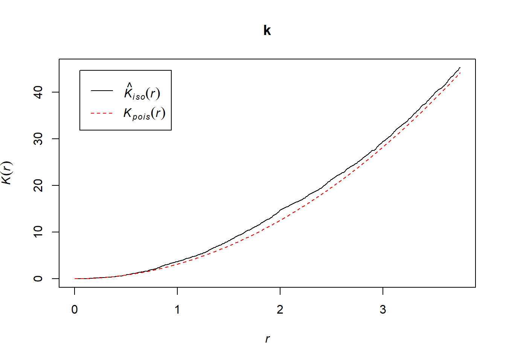
Selon ce graphique, il semble y avoir une excès de voisins à partir d’un rayon de 1 m. Pour vérifier s’il s’agit d’un écart significatif, nous produisons une enveloppe de simulation avec la fonction envelope. Le permier argument d’envelope est un patron de point auquel les simulations seront comparées, le deuxième une fonction à calculer (ici, Kest) pour chaque patron simulé, puis on y ajoute les arguments de la fonction Kest (ici, seulement correction).
plot(envelope(semis_split[[1]], Kest, correction = "iso"), legend = FALSE)## Generating 99 simulations of CSR ...
## 1, 2, 3, 4, 5, 6, 7, 8, 9, 10, 11, 12, 13, 14, 15, 16, 17, 18, 19, 20, 21, 22, 23, 24, 25, 26, 27, 28, 29, 30, 31, 32, 33, 34, 35, 36, 37, 38, 39, 40,
## 41, 42, 43, 44, 45, 46, 47, 48, 49, 50, 51, 52, 53, 54, 55, 56, 57, 58, 59, 60, 61, 62, 63, 64, 65, 66, 67, 68, 69, 70, 71, 72, 73, 74, 75, 76, 77, 78, 79, 80,
## 81, 82, 83, 84, 85, 86, 87, 88, 89, 90, 91, 92, 93, 94, 95, 96, 97, 98, 99.
##
## Done.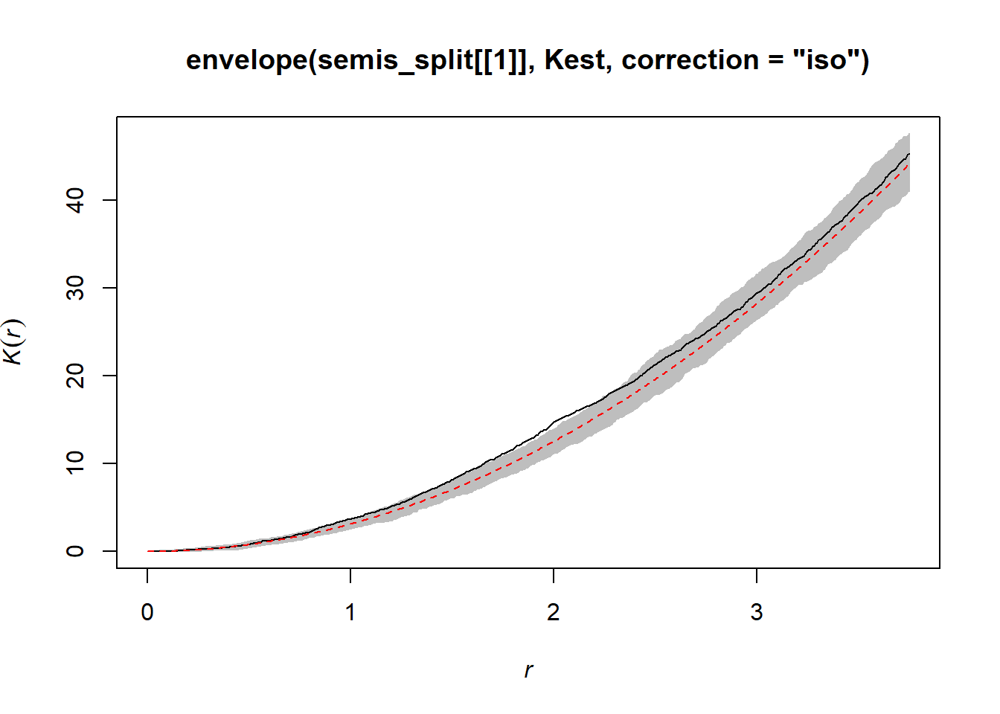
Tel qu’indiqué par le message, cette fonction effectue par défaut 99 simulations de l’hypothèse nulle correspondant à une structure spatiale totalement aléatoire (CSR, pour complete spatial randomness).
La courbe observée sort de l’enveloppe des 99 simulations près de \(r = 2\). Il faut être prudent de ne pas interpréter trop rapidement un résultat sortant de l’enveloppe. Même s’il y a environ une probabilité de 1% d’obtenir un résultat plus extrême selon l’hypothèse nulle à une distance donnée, l’enveloppe est calculée pour un grand nombre de valeurs de la distance et nous n’effectuons pas de correction pour les comparaisons multiples. Ainsi, un écart significatif pour une très petite plage de valeurs de \(r\) peut être simplement dû au hasard.
En contrepartie, le graphique semblable pour le peuplier montre une agrégation importante jusqu’à 3 m et au-delà.
plot(envelope(semis_split[[2]], Kest, correction = "iso"), legend = FALSE)## Generating 99 simulations of CSR ...
## 1, 2, 3, 4, 5, 6, 7, 8, 9, 10, 11, 12, 13, 14, 15, 16, 17, 18, 19, 20, 21, 22, 23, 24, 25, 26, 27, 28, 29, 30, 31, 32, 33, 34, 35, 36, 37, 38, 39, 40,
## 41, 42, 43, 44, 45, 46, 47, 48, 49, 50, 51, 52, 53, 54, 55, 56, 57, 58, 59, 60, 61, 62, 63, 64, 65, 66, 67, 68, 69, 70, 71, 72, 73, 74, 75, 76, 77, 78, 79, 80,
## 81, 82, 83, 84, 85, 86, 87, 88, 89, 90, 91, 92, 93, 94, 95, 96, 97, 98, 99.
##
## Done.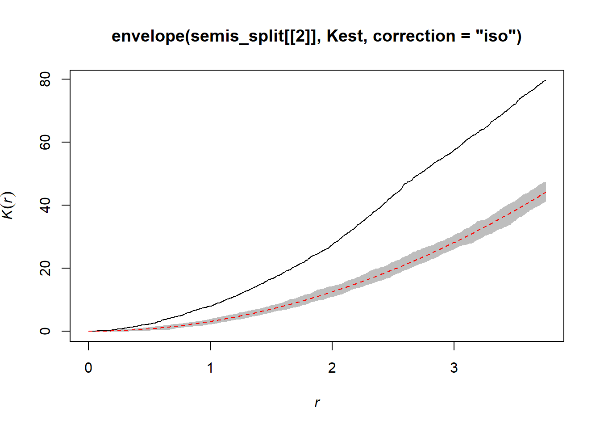
Pour déterminer s’il y a une dépendance entre la position des deux espèces, nous calculons l’indice bivarié \(K_{ij}\), avec le bouleau comme espèce focale \(i\) et le peuplier comme espèce voisine \(j\), par le biais de la fonction Kcross.
plot(Kcross(semis, i = "B", j = "P", correction = "iso"), legend = FALSE)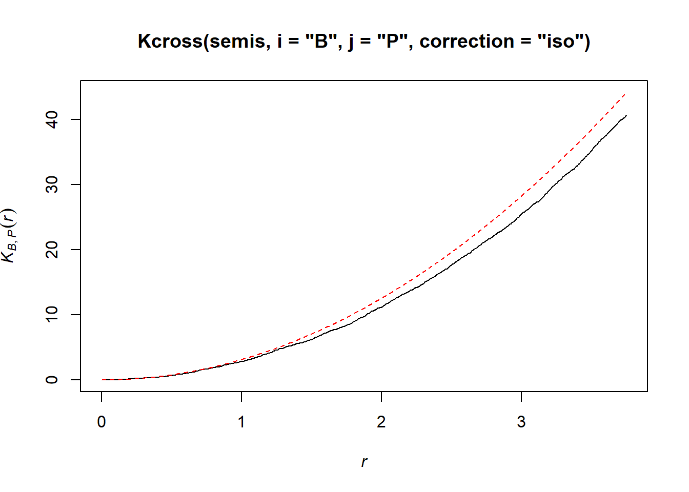
Ici, le \(K\) observé est inférieur à la valeur théorique, indiquant une répulsion possible des deux patrons.
Pour déterminer l’enveloppe du \(K\) selon l’hypothèse nulle d’indépendance des deux patrons, nous devons spécifier que les simulations doivent être basées sur une translation des patrons et non sur une structure spatiale totalement aléatoire. Nous indiquons que les simulations doivent utiliser la fonction rshift (translation aléatoire) avec l’argument simulate = rshift. Comme pour le cas précédent, il faut répéter dans la fonction envelope tous les arguments nécessaires pour Kcross.
plot(envelope(semis, Kcross, simulate = rshift, i = "P", j = "B",
correction = "iso"), legend = FALSE)## Generating 99 simulations by evaluating function ...
## 1, 2, 3, 4, 5, 6, 7, 8, 9, 10, 11, 12, 13, 14, 15, 16, 17, 18, 19, 20, 21, 22, 23, 24, 25, 26, 27, 28, 29, 30, 31, 32, 33, 34, 35, 36, 37, 38, 39, 40,
## 41, 42, 43, 44, 45, 46, 47, 48, 49, 50, 51, 52, 53, 54, 55, 56, 57, 58, 59, 60, 61, 62, 63, 64, 65, 66, 67, 68, 69, 70, 71, 72, 73, 74, 75, 76, 77, 78, 79, 80,
## 81, 82, 83, 84, 85, 86, 87, 88, 89, 90, 91, 92, 93, 94, 95, 96, 97, 98, 99.
##
## Done.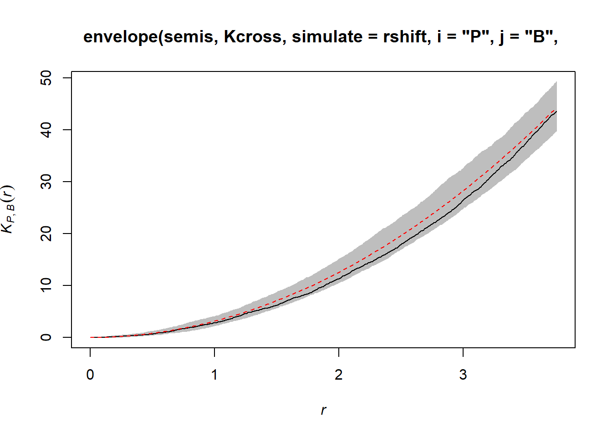
Ici, la courbe observée se situe totalement dans l’enveloppe, donc nous ne rejetons pas l’hypothèse nulle d’indépendance des deux patrons.
Modèles géostatistiques
La géostatistique désigne un groupe de techniques tirant leur origine en sciences de la Terre. Elle s’intéresse à des variables distribuées de façon continue dans l’espace, dont on cherche à estimer la distribution en échantillonnant un nombre de points. Un exemple classique de ces techniques provient du domaine minier, où l’on cherchait à créer une carte de la concentration du minerai sur un site à partir d’échantillons pris à différents points du site.
Pour ces modèles, nous supposerons que \(z(x, y)\) est une variable spatiale stationnaire mesurée selon les coordonnées \(x\) et \(y\).
Variogramme
Un aspect central de la géostatistique est l’estimation du variogramme \(\gamma_z\) de la variable \(z\). Le variogramme est égal à la moitié de l’écart carré moyen entre les valeurs de \(z\) pour deux points \((x_i, y_i)\) et \((x_j, y_j)\) séparés par une distance \(h\).
\[\gamma_z(h) = \frac{1}{2} \text{E} \left[ \left( z(x_i, y_i) - z(x_j, y_j) \right)^2 \right]_{d_{ij} = h}\]
Dans cette équation, la fonction \(\text{E}\) avec l’indice \(d_{ij}=h\) désigne l’espérance statistique (autrement dit, la moyenne) de l’écart au carré entre les valeurs de \(z\) pour les points séparés par une distance \(h\).
Si on préfère exprimer l’autocorrélation \(\rho_z(h)\) entre mesures de \(z\) séparées par une distance \(h\), celle-ci est reliée au variogramme par l’équation:
\[\gamma_z = \sigma_z^2(1 - \rho_z)\] ,
où \(\sigma_z^2\) est la variance globale de \(z\).
Notez que \(\gamma_z = \sigma_z^2\) si nous sommes à une distance où les mesures de \(z\) sont indépendantes, donc \(\rho_z = 0\). Dans ce cas, on voit bien que \(\gamma_z\) s’apparente à une variance, même s’il est parfois appelé “semivariogramme” ou “semivariance” en raison du facteur 1/2 dans l’équation ci-dessus.
Modèles théoriques du variogramme
Plusieurs modèles paramétriques ont été proposés pour représenter la corrélation spatiale en fonction de la distance entre points d’échantillonnage. Considérons d’abord une corrélation qui diminue de façon exponentielle:
\[\rho_z(h) = e^{-h/r}\]
Ici, \(\rho_z = 1\) pour \(h = 0\) et la corréaltion est multipliée par \(1/e \approx 0.37\) pour chaque augmentation de \(r\) de la distance. Dans ce contexte, \(r\) se nomme la portée (range) de la corrélation.
À partir de l’équation ci-dessus, nous pouvons calculer le variogramme correspondant.
\[\gamma_z(h) = \sigma_z^2 (1 - e^{-h/r})\]
Voici une représentation graphique de ce variogramme.
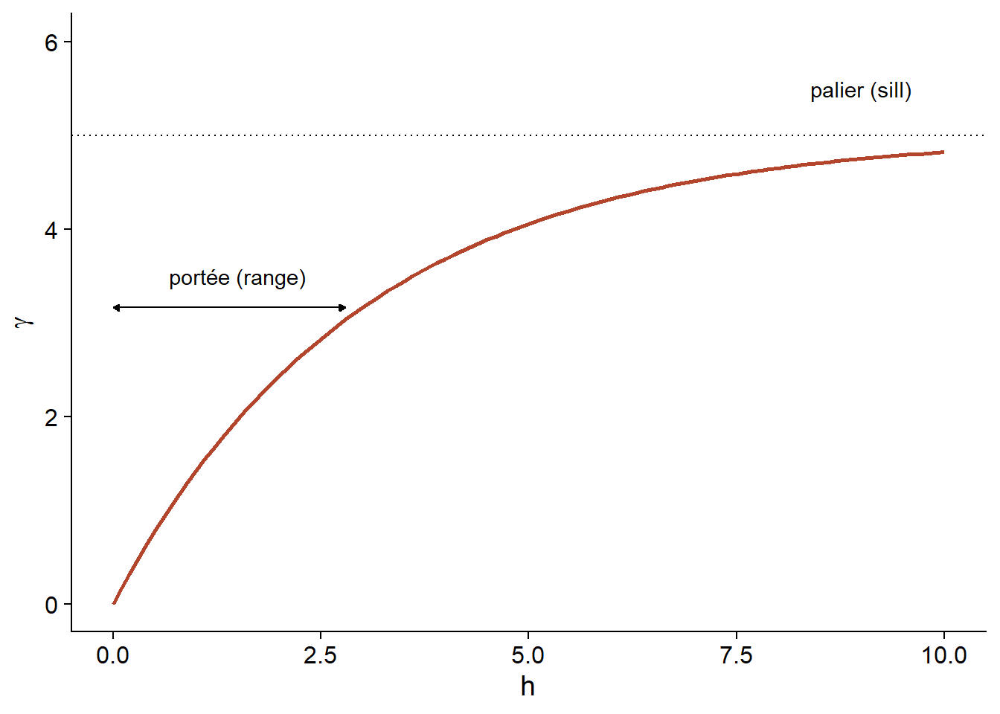
En raison de la fonction exponentielle, la valeur de \(\gamma\) à des grandes distances s’approche de la variance globale \(\sigma_z^2\) sans exactement l’atteindre. Cette asymptote est appelée palier (sill) dans le contexte géostatistique et représentée par le symbole \(s\).
Finalement, il n’est parfois pas réaliste de supposer une corrélation parfaite lorsque la distance est nulle, en raison d’une variation possible de \(z\) à très petite échelle. On peut ajouter au modèle un effet de pépite (nugget), noté \(n\), pour que \(\gamma = n\) si \(h = 0\). Le terme pépite provient de l’origine minière de ces techniques, où une pépite d’un minerai pourrait être la source d’une variation abrupte de la concentration à petite échelle.
En ajoutant l’effet de pépite, le reste du variogramme est “compressé” pour conserver le même palier, ce qui résulte en l’équation suivante.
\[\gamma_z(h) = n + (s - n) (1 - e^{-h/r})\]
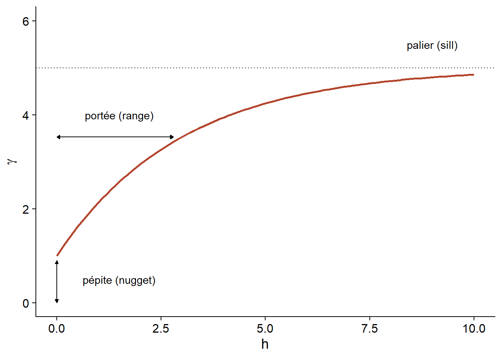
En plus du modèle exponentiel, deux autres modèles théoriques courants pour le variogramme sont le modèle gaussien (où la corrélation suit une courbe demi-normale), ainsi que le modèle sphérique (où le variogramme augmente de façon linéaire au départ pour ensuite courber et atteindre le palier à une distance égale à sa portée \(r\)). Le modèle sphérique permet donc à la corrélation d’être exactement 0 à grande distance, plutôt que de s’approcher graduellement de zéro dans le cas des autres modèles.
| Modèle | \(\rho(h)\) | \(\gamma(h)\) |
|---|---|---|
| Exponentiel | \(\exp\left(-\frac{h}{r}\right)\) | \(s \left(1 - \exp\left(-\frac{h}{r}\right)\right)\) |
| Gaussien | \(\exp\left(-\frac{h^2}{r^2}\right)\) | \(s \left(1 - \exp\left(-\frac{h^2}{r^2}\right)\right)\) |
| Sphérique \((h < r)\) * | \(1 - \frac{3}{2}\frac{h}{r} + \frac{1}{2}\frac{h^3}{r^3}\) | \(s \left(\frac{3}{2}\frac{h}{r} - \frac{1}{2}\frac{h^3}{r^3} \right)\) |
* Pour le modèle sphérique, \(\rho = 0\) et \(\gamma = s\) si \(h \ge r\).
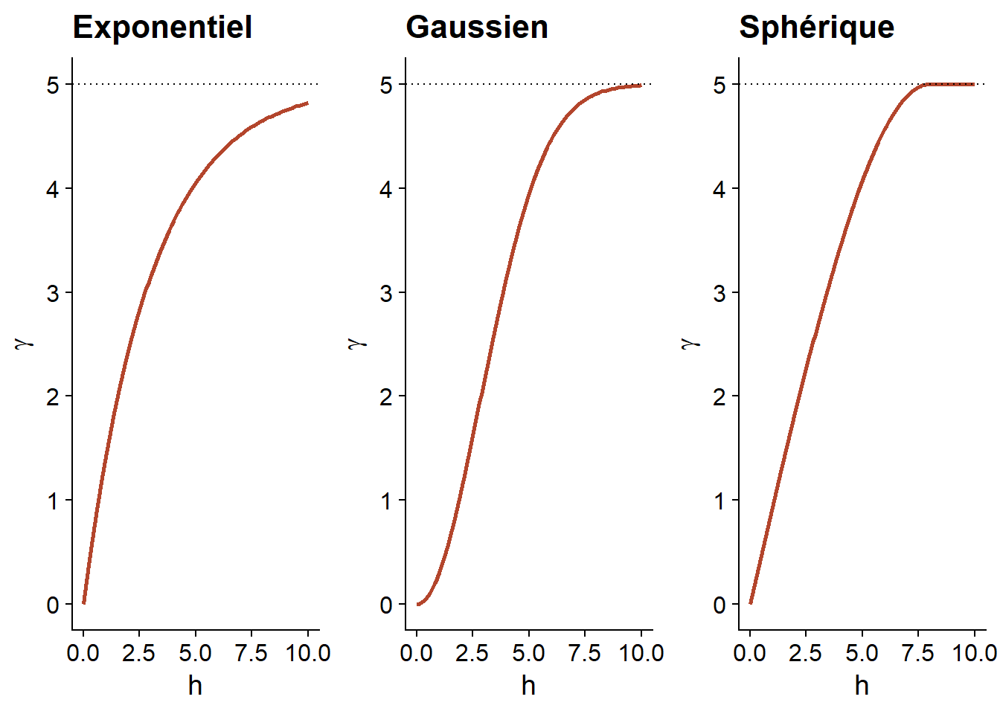
Variogramme empirique
Pour estimer \(\gamma_z(h)\) à partir de données empiriques, nous devons définir des classes de distance, donc grouper différentes distances dans une marge \(\pm \delta\) autour d’une distance \(h\), puis calculer l’écart-carré moyen pour les paires de points dans cette classe de distance.
\[\hat{\gamma_z}(h) = \frac{1}{2 N_{\text{paires}}} \sum \left[ \left( z(x_i, y_i) - z(x_j, y_j) \right)^2 \right]_{d_{ij} = h \pm \delta}\]
Nous verrons dans la partie suivante comment estimer un variogramme dans R.
Variogramme et données temporelles
Un variogramme peut aussi être estimé en fonction des écarts dans le temps, qui est dans ce cas considéré comme un espace à 1 dimension. Ceci permet de modéliser la dépendance temporelle pour une série de mesures prises à intervalles irréguliers, lorsque les modèles autorégressifs vus au dernier cours ne s’appliquent pas.
Modèle de régression avec corrélation spatiale
L’équation suivante représente une régression linéaire multiple incluant une corrélation spatiale résiduelle:
\[v = \beta_0 + \sum_i \beta_i u_i + z + \epsilon\]
Ici, \(v\) désigne la variable réponse et \(u\) les prédicteurs, pour ne pas confondre avec les coordonnées spatiales \(x\) et \(y\).
En plus du résidu \(\epsilon\) qui est indépendant entre les observations, le modèle inclut un terme \(z\) qui représente la portion spatialement corrélée de la variance résiduelle.
Voici une suggestions d’étapes à suivre pour appliquer ce type de modèle:
Ajuster le modèle de régression sans corrélation spatiale.
Vérifier la présence de corrélation spatiale à partir du variogramme empirique des résidus.
Ajuster un ou plusieurs modèles de régression avec corrélation spatiale. On peut comparer avec l’AIC au besoin pour choisir la forme de la corrélation.
Nous verrons dans la dernière partie du cours comment inclure des termes de corrélation spatiale dans des modèles complexes, comme les modèles mixtes ou bayésiens.
Modèles géostatistiques dans R
Le package gstat contient des fonctions liées à la géostatistique. Pour cet exemple, nous utiliserons le jeu de données oxford de ce package, qui contient des mesures de propriétés physiques et chimiques pour 126 échantillons du sol d’un site, ainsi que leurs coordonnées XCOORD et YCOORD.
library(gstat)
data(oxford)
str(oxford)## 'data.frame': 126 obs. of 22 variables:
## $ PROFILE : num 1 2 3 4 5 6 7 8 9 10 ...
## $ XCOORD : num 100 100 100 100 100 100 100 100 100 100 ...
## $ YCOORD : num 2100 2000 1900 1800 1700 1600 1500 1400 1300 1200 ...
## $ ELEV : num 598 597 610 615 610 595 580 590 598 588 ...
## $ PROFCLASS: Factor w/ 3 levels "Cr","Ct","Ia": 2 2 2 3 3 2 3 2 3 3 ...
## $ MAPCLASS : Factor w/ 3 levels "Cr","Ct","Ia": 2 3 3 3 3 2 2 3 3 3 ...
## $ VAL1 : num 3 3 4 4 3 3 4 4 4 3 ...
## $ CHR1 : num 3 3 3 3 3 2 2 3 3 3 ...
## $ LIME1 : num 4 4 4 4 4 0 2 1 0 4 ...
## $ VAL2 : num 4 4 5 8 8 4 8 4 8 8 ...
## $ CHR2 : num 4 4 4 2 2 4 2 4 2 2 ...
## $ LIME2 : num 4 4 4 5 5 4 5 4 5 5 ...
## $ DEPTHCM : num 61 91 46 20 20 91 30 61 38 25 ...
## $ DEP2LIME : num 20 20 20 20 20 20 20 20 40 20 ...
## $ PCLAY1 : num 15 25 20 20 18 25 25 35 35 12 ...
## $ PCLAY2 : num 10 10 20 10 10 20 10 20 10 10 ...
## $ MG1 : num 63 58 55 60 88 168 99 59 233 87 ...
## $ OM1 : num 5.7 5.6 5.8 6.2 8.4 6.4 7.1 3.8 5 9.2 ...
## $ CEC1 : num 20 22 17 23 27 27 21 14 27 20 ...
## $ PH1 : num 7.7 7.7 7.5 7.6 7.6 7 7.5 7.6 6.6 7.5 ...
## $ PHOS1 : num 13 9.2 10.5 8.8 13 9.3 10 9 15 12.6 ...
## $ POT1 : num 196 157 115 172 238 164 312 184 123 282 ...Supposons que nous souhaitons modéliser la concentration de magnésium (MG1), représentée en fonction de la position spatiale dans le graphique suivant.
library(ggplot2)
ggplot(oxford, aes(x = YCOORD, y = XCOORD, size = MG1)) +
geom_point() +
coord_fixed()
Notez que les axes \(x\) et \(y\) ont été inversés par souci d’espace. La fonction coord_fixed() de ggplot2 assure que l’échelle soit la même sur les deux axes, ce qui est utile pour représenter des données spatiales.
Nous voyons tout de suite que ces mesures ont été prises sur une grille de 100 m de côté. Il semble que la concentration de magnésium soit spatialement corrélée, bien qu’il puisse s’agir d’une corrélation induite par une autre variable. Nous savons notamment que la disponibilité de l’ion magnésium est reliée (négativement) au pH du sol (PH1).
ggplot(oxford, aes(x = PH1, y = MG1)) +
geom_point()
La fonction variogram de gstat sert à estimer un variogramme à partir de données empiriques. Voici le résultat obtenu pour la variable MG1.
var_mg <- variogram(MG1 ~ 1, locations = ~ XCOORD + YCOORD, data = oxford)
var_mg## np dist gamma dir.hor dir.ver id
## 1 225 100.0000 1601.404 0 0 var1
## 2 200 141.4214 1950.805 0 0 var1
## 3 548 215.0773 2171.231 0 0 var1
## 4 623 303.6283 2422.245 0 0 var1
## 5 258 360.5551 2704.366 0 0 var1
## 6 144 400.0000 2948.774 0 0 var1
## 7 570 427.5569 2994.621 0 0 var1
## 8 291 500.0000 3402.058 0 0 var1
## 9 366 522.8801 3844.165 0 0 var1
## 10 200 577.1759 3603.060 0 0 var1
## 11 458 619.8400 3816.595 0 0 var1
## 12 90 670.8204 3345.739 0 0 var1La formule MG1 ~ 1 indique qu’aucun prédicteur linéaire n’est inclus dans ce modèle, tandis que l’argument locations indique quelles variables du tableau correspondent aux coordonnées spatiales.
Dans le tableau obtenu, gamma est la valeur du variogramme pour la classe de distance centrée sur dist, tandis que np est le nombre de paires de points dans cette classe. Ici, puisque les points sont situés sur une grille, nous obtenons des classes de distance régulières (ex.: 100 m pour les points voisins sur la grille, 141 m pour les voisins en diagonale, etc.) Nous pouvons illustrer le variogramme avec plot.
plot(var_mg, col = "black")
Si nous voulons estimer la corrélation spatiale résiduelle de MG1 après avoir inclus l’effet de PH1, nous pouvons ajouter ce prédicteur à la formule.
var_mg <- variogram(MG1 ~ PH1, locations = ~ XCOORD + YCOORD, data = oxford)
plot(var_mg, col = "black")
En incluant l’effet du pH, la portée de la corrélation spatiale semble diminuer, alors que le plateau est atteint autour de 300 m. Il semble même que le variogramme diminue au-delà de 400 m. En général, nous supposons que la variance entre deux points ne diminue pas avec la distance, à moins d’avoir un patron spatial périodique.
La fonction fit.variogram accepte comme arguments un variogramme estimé à partir des données, ainsi qu’un modèle théorique décrit dans une fonction vgm, puis estime les paramètres de ce modèle en fonction des données. L’ajustement se fait par la méthode des moindres carrés.
Par exemple, vgm("Exp") indique d’ajuster un modèle exponentiel.
vfit <- fit.variogram(var_mg, vgm("Exp"))
vfit## model psill range
## 1 Nug 0.000 0.00000
## 2 Exp 1951.496 95.11235Il n’y a aucun effet de pépite, car psill = 0 pour la partie Nug (nugget) du modèle. La partie exponentielle a un palier à 1951 (correspondant à \(\sigma_z^2\)) et une portée de 95 m.
Pour comparer différents modèles, on peut donner un vecteur de noms de modèles à vgm. Dans l’exemple suivant, nous incluons les modèles exponentiel, gaussien (“Gau”) et sphérique (“Sph”).
vfit <- fit.variogram(var_mg, vgm(c("Exp", "Gau", "Sph")))
vfit## model psill range
## 1 Nug 0.000 0.00000
## 2 Exp 1951.496 95.11235Le modèle exponentiel demeure le mieux ajusté.
Finalement, nous pouvons superposer le modèle théorique et le variogramme empirique sur un même graphique.
plot(var_mg, vfit, col = "black")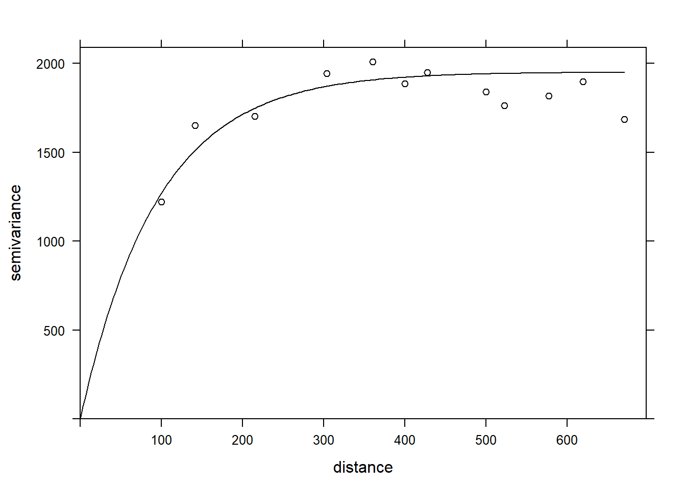
Données aréales
Les données aréales sont des variables mesurées pour des régions de l’espace; ces régions sont définies par des polygones. Ce type de données est plus courant en sciences sociales, en géographie humaine et en épidémiologie, où les données sont souvent disponibles à l’échelle de divisions administratives du territoire.
Ce type de données apparaît aussi fréquemment dans la gestion des ressources naturelles. Par exemple, la carte suivante montre les unités d’aménagement forestier du Ministère de la Forêts, de la Faune et des Parcs du Québec.

Supposons qu’une certaine variable soit disponible au niveau de ces divisions du territoire. Comment pouvons-nous modéliser la corrélation spatiale entre les unités qui sont spatialement rapprochées?
Une option serait d’appliquer les méthodes géostatistiques vues précédemment, en calculant par exemple la distance entre les centres des polygones.
Une autre option, qui est davantage privilégiée pour les données aréales, consiste à définir un réseau où chaque région est connectée aux régions voisines par un lien. On suppose ensuite que les variables sont directement corrélées entre régions voisines seulement. (Comme nous avons vu dans le cas des séries temporelles, les corrélations directes entre voisins immédiats génèrent aussi des corrélations indirectes pour une chaîne de voisins.)
Dans ce type de modèle, la corrélation n’est pas nécessairement la même d’un lien à un autre. Dans ce cas, chaque lien du réseau peut être associé à un poids représentant son importance pour la corrélation spatiale. Nous représentons ces poids par une matrice \(W\) où \(w_{ij}\) est le poids du lien entre les régions \(i\) et \(j\). Une région n’a pas de lien avec elle-même, donc \(w_{ii} = 0\).
Un choix simple pour \(W\) consiste à assigner un poids égal à 1 si les régions sont voisines, sinon 0 (poids binaires).
Outre les divisions du territoire en polygones, un autre exemple de données aréales consiste en une grille où la variable est compilée pour chaque cellule de la grille. Dans ce cas, une cellule a généralement 4 ou 8 cellules voisines, selon que les diagonales soient incluses ou non.
Indice de Moran
Avant de discuter des modèles d’autocorrélation spatiale, nous présentons l’indice \(I\) de Moran, qui permet de tester si une corrélation significative est présente entre régions voisines.
L’indice de Moran est un coefficient d’autocorrélation spatiale des \(z\), pondéré par les poids \(w_{ij}\). Il prend donc des valeurs entre -1 et 1.
\[I = \frac{N}{\sum_i \sum_j w_{ij}} \frac{\sum_i \sum_j w_{ij} (z_i - \bar{z}) (z_j - \bar{z})}{\sum_i (z_i - \bar{z})^2}\]
Dans cette équation, nous reconnaissons l’expression d’une corrélation, soit le produit des écarts à la moyenne de deux variables \(z_i\) et \(z_j\), divisé par le produit de leurs écarts-types (qui est le même, donc on obtient la variance). La contribution de chaque paire \((i, j)\) est multipliée par son poids \(w_{ij}\) et le terme à gauche (le nombre de régions \(N\) divisé par la somme des poids) assure que le résultat soit borné entre -1 et 1.
Puisque la distribution de \(I\) est connue en l’absence d’autocorrélation spatiale, cette statistique permet de tester l’hypothèse nulle selon laquelle il n’y a pas de corrélation spatiale entre régions voisines.
Bien que nous ne verrons pas d’exemple dans ce cours-ci, l’indice de Moran peut aussi être appliqué aux données ponctuelles. Dans ce cas, on divise les paires de points en classes de distance et on calcule \(I\) pour chaque classe de distance; le poids \(w_{ij} = 1\) si la distance entre \(i\) et \(j\) se trouve dans la classe de distance voulue, 0 autrement.
Modèles d’autorégression spatiale
Rappelons-nous la formule pour une régression linéaire avec dépendance spatiale:
\[v = \beta_0 + \sum_i \beta_i u_i + z + \epsilon\] ,
où \(z\) est la portion de la variance résiduelle qui est spatialement corrélée.
Il existe deux principaux types de modèles autorégressifs pour représenter la dépendance spatiale de \(z\): l’autorégression conditionnelle (CAR) et l’autorégression simultanée (SAR).
Autorégression conditionnelle (CAR)
Dans le modèle d’autorégression conditionnelle, la valeur de \(z_i\) pour la région \(i\) suit une distribution normale: sa moyenne dépend de la valeur \(z_j\) des régions voisines, multipliée par le poids \(w_{ij}\) et un coefficient de corrélation \(\rho\); son écart-type \(\sigma_{z_i}\) peut varier d’une région à l’autre.
\[z_i \sim \text{N}\left(\sum_j \rho w_{ij} z_j,\sigma_{z_i} \right)\]
Dans ce modèle, si \(w_{ij}\) est une matrice binaire (0 pour les non-voisins, 1 pour les voisins), alors \(\rho\) est le coefficient de corrélation partielle entre régions voisines. Cela est semblable au modèle AR(1) dans le contexte temporel, où le coefficient d’autorégression indiquait la corrélation partielle.
Autorégression simultanée (SAR)
Dans le modèle d’autorégression simultanée, la valeur de \(z_i\) est donnée directement par la somme de contributions des valeurs voisines \(z_j\), multipliées par \(\rho w_{ij}\), avec un résidu indépendant \(\nu_i\) d’écart-type \(\sigma_z\).
\[z_i = \sum_j \rho w_{ij} z_j + \nu_i\]
À première vue, cela ressemble à un modèle autorégressif temporel. Il existe cependant une différence conceptuelle importante. Pour les modèles temporels, l’influence causale est dirigée dans une seule direction: \(v(t-2)\) affecte \(v(t-1)\) qui affecte ensuite \(v(t)\). Pour un modèle spatial, chaque \(z_j\) qui affecte \(z_i\) dépend à son tour de \(z_i\). Ainsi, pour déterminer la distribution conjointe des \(z\), il faut résoudre simultanément (d’où le nom du modèle) un système d’équations.
Pour cette raison, même si ce modèle ressemble à la formule du modèle conditionnel (CAR), les solutions des deux modèles diffèrent et dans le cas du SAR, le coefficient \(\rho\) n’est pas directement égal à la corrélation partielle due à chaque région voisine.
Pour plus de détails sur les aspects mathématiques de ces modèles, vous pouvez consulter l’article de Ver Hoef et al. (2018) suggéré dans les références.
Pour l’instant, nous considérerons les SAR et les CAR comme deux types de modèles possibles pour représenter une corrélation spatiale sur un réseau. Nous pouvons toujours ajuster plusieurs modèles et les comparer avec l’AIC pour choisir la meilleure forme de la corrélation ou la meilleure matrice de poids.
Les modèles CAR et SAR partagent un avantage sur les modèles géostatistiques au niveau de l’efficacité. Dans un modèle géostatistique, les corrélations spatiales sont définies entre chaque paire de points, même si elles deviennent négligeables lorsque la distance augmente. Pour un modèle CAR ou SAR, seules les régions voisines contribuent et la plupart des poids sont égaux à 0, ce qui rend ces modèles plus rapides à ajuster qu’un modèle géostatistique lorsque les données sont massives.
Notez finalement qu’il existe aussi un équivalent spatial des modèles de moyenne mobile (MA) vus dans un contexte temporel. Cependant, puisque leur application est plus rare, nous n’en discutons pas dans ce cours.
Données aréales dans R
Pour illustrer l’analyse de données aréales dans R, nous chargeons les packages spData (contenant des exemples de données spatiales), spdep (pour définir des réseaux spatiaux et calculer l’indice de Moran) et spatialreg (pour les modèles SAR et CAR).
library(spData)
library(spdep)
library(spatialreg)Nous utiliserons comme exemple le jeu de données spatial us_states qui contient des polygones pour 49 états américains (tous les états excluant l’Alaska et Hawaii, plus le District de Columbia).
data(us_states)
head(us_states)## Simple feature collection with 6 features and 6 fields
## geometry type: MULTIPOLYGON
## dimension: XY
## bbox: xmin: -114.8136 ymin: 24.55868 xmax: -71.78699 ymax: 42.04964
## CRS: EPSG:4269
## GEOID NAME REGION AREA total_pop_10 total_pop_15
## 1 01 Alabama South 133709.27 [km^2] 4712651 4830620
## 2 04 Arizona West 295281.25 [km^2] 6246816 6641928
## 3 08 Colorado West 269573.06 [km^2] 4887061 5278906
## 4 09 Connecticut Norteast 12976.59 [km^2] 3545837 3593222
## 5 12 Florida South 151052.01 [km^2] 18511620 19645772
## 6 13 Georgia South 152725.21 [km^2] 9468815 10006693
## geometry
## 1 MULTIPOLYGON (((-88.20006 3...
## 2 MULTIPOLYGON (((-114.7196 3...
## 3 MULTIPOLYGON (((-109.0501 4...
## 4 MULTIPOLYGON (((-73.48731 4...
## 5 MULTIPOLYGON (((-81.81169 2...
## 6 MULTIPOLYGON (((-85.60516 3...Il s’agit d’un tableau de données spatial dont la dernière colonne définit le polygone correspondant à l’état et les autres colonnes définissent des variables qui y sont associées. Nous ne discuterons pas en détail de cette structure de données, mais notez que le packge sf permet d’importer des fichiers SIG vectoriels (shapefiles) dans ce format de données pour R.
Pour illustrer une des variables sur une carte, nous appelons la fonction plot avec le nom de la colonne entre crochets et guillemets.
plot(us_states["REGION"])
Nous voulons ici modéliser le revenu médian dans chaque état en 2015. Cette variable median_income_15 se trouve dans un autre jeu de données, us_states_df.
data(us_states_df)
head(us_states_df)## # A tibble: 6 x 5
## state median_income_10 median_income_15 poverty_level_10 poverty_level_15
## <chr> <dbl> <dbl> <dbl> <dbl>
## 1 Alabama 21746 22890 786544 887260
## 2 Alaska 29509 31455 64245 72957
## 3 Arizona 26412 26156 933113 1180690
## 4 Arkansas 20881 22205 502684 553644
## 5 California 27207 27035 4919945 6135142
## 6 Colorado 29365 30752 584184 653969Nous utilisons la fonction inner_join de dplyr pour joindre les deux jeux de données, en spécifiant avec by que la colonne NAME de us_states correspond à la colonne state de us_states_df.
library(dplyr)
us_states <- inner_join(us_states, us_states_df,
by = c("NAME" = "state"))
plot(us_states["median_income_15"])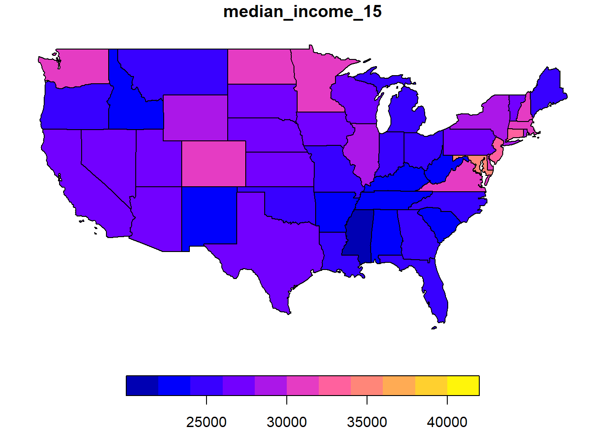
La fonction poly2nb du package spdep définit un réseau de voisinage à partir de polygones. Le résultat vois est une liste de 49 éléments où chaque élément contient les indices des polygones voisins d’un polygone donné.
vois <- poly2nb(us_states)
vois[[1]]## [1] 5 6 36 44Nous pouvons illustrer ce réseau en faisant l’extraction des coordonnées du centre de chaque état, en créant une carte muette avec plot(us_states["geometry"]), puis en ajoutant le réseau comme couche additionnelle avec plot(vois, add = TRUE, coords = coords).
coords <- st_centroid(us_states) %>%
st_coordinates()
plot(us_states["geometry"])
plot(vois, add = TRUE, col = "red", coords = coords)
Il nous reste à ajouter des poids à chaque lien du réseau avec la fonction nb2listw. Le style de poids “B” correspond aux poids binaires, soit 1 pour la présence de lien et 0 pour l’absence de lien entre deux états.
Une fois ces poids définis, nous pouvons vérifier s’il y a une autocorrélation significative du revenu médian entre états voisins, avec le test de Moran.
poids <- nb2listw(vois, style = "B")
moran.test(us_states$median_income_15, poids)##
## Moran I test under randomisation
##
## data: us_states$median_income_15
## weights: poids
##
## Moran I statistic standard deviate = 4.127, p-value = 1.838e-05
## alternative hypothesis: greater
## sample estimates:
## Moran I statistic Expectation Variance
## 0.342670652 -0.020833333 0.007758162La valeur de \(I = 0.34\) est très significative à en juger par la valeur \(p\) du test.
Finalement, nous ajustons des modèles SAR et CAR à ces données avec la fonction spautolm (spatial autoregressive linear model) de spatialreg. Voici le code pour un modèle SAR incluant l’effet fixe de la région (ouest, mid-ouest, sud ou nord-est).
modsp <- spautolm(median_income_15 ~ REGION, data = us_states,
listw = poids)
summary(modsp)##
## Call: spautolm(formula = median_income_15 ~ REGION, data = us_states,
## listw = poids)
##
## Residuals:
## Min 1Q Median 3Q Max
## -5632.95 -2243.24 -856.84 1781.90 11770.13
##
## Coefficients:
## Estimate Std. Error z value Pr(>|z|)
## (Intercept) 28703.411 1607.825 17.8523 <2e-16
## REGIONMidwest 42.832 2157.389 0.0199 0.9842
## REGIONSouth -1131.312 1904.512 -0.5940 0.5525
## REGIONWest -815.428 2393.545 -0.3407 0.7333
##
## Lambda: 0.12915 LR test value: 7.7579 p-value: 0.0053479
## Numerical Hessian standard error of lambda: 0.033239
##
## Log likelihood: -466.35
## ML residual variance (sigma squared): 9804100, (sigma: 3131.2)
## Number of observations: 49
## Number of parameters estimated: 6
## AIC: 944.7La valeur donnée par Lambda dans le sommaire correspond au coefficient \(\rho\) dans notre description du modèle. Le test du rapport de vraisemblance (LR test) confirme que cette corrélation spatiale résiduelle (après avoir tenu compte de l’effet de la région) est significative.
Pour évaluer un modèle CAR plutôt que SAR, nous devons spécifier family = "CAR".
modsp2 <- spautolm(median_income_15 ~ REGION, data = us_states,
listw = poids, family = "CAR")
summary(modsp2)##
## Call: spautolm(formula = median_income_15 ~ REGION, data = us_states,
## listw = poids, family = "CAR")
##
## Residuals:
## Min 1Q Median 3Q Max
## -5709.20 -1999.90 -682.38 2072.01 11328.25
##
## Coefficients:
## Estimate Std. Error z value Pr(>|z|)
## (Intercept) 29022.2 1484.4 19.5519 <2e-16
## REGIONMidwest -408.0 2049.4 -0.1991 0.8422
## REGIONSouth -1436.2 1820.6 -0.7888 0.4302
## REGIONWest -1378.0 2239.7 -0.6153 0.5384
##
## Lambda: 0.16539 LR test value: 5.8956 p-value: 0.015179
## Numerical Hessian standard error of lambda: 0.031414
##
## Log likelihood: -467.2811
## ML residual variance (sigma squared): 10168000, (sigma: 3188.7)
## Number of observations: 49
## Number of parameters estimated: 6
## AIC: 946.56Pour un modèle CAR avec des poids binaires, la valeur de Lambda (que nous avions appelé \(\rho\)) donne directement le coefficient de corrélation partiel entre états voisins. Notez que l’AIC ici est légèrement supérieur au modèle SAR, donc ce dernier donnait un meilleur ajustement.
Corrélation spatiale dans des modèles complexes
Comme pour le cours sur les séries temporelles, nous terminons ce cours en présentant quelques pistes pour intégrer les corrélations spatiales dans des modèles plus complexes.
Modèles géostatistiques avec nlme
Au dernier cours, nous avons vu que la fonction lme du package nlme permettait d’inclure des corrélations temporelles avec des termes de type corARMA. Le même package contient des fonctions de corrélation spatiale, incluant une corrélation exponentielle (corExp), gaussienne (corGaus) et sphérique (corSpher).
Voici un exemple de modèle linéaire mixte ajusté avec lme, où v est la réponse, u est un effet fixe et groupe est un effet aléatoire. L’argument correlation indique une corrélation exponentielle en fonction de la distance définie par les coordonnées x et y, avec un effet de pépite nugget = TRUE.
library(nlme)
mod <- lme(v ~ u, data, random = list(groupe = ~1),
correlation = corExp(form = ~ x + y, nugget = TRUE))Notez que les limites du package nlme mentionnées au dernier cours s’appliquent encore ici: il n’est pas possible d’inclure plusieurs effets aléatoire croisés (non-nichés) et le package n’est pas très efficace pour l’estimation de modèles généralisés.
Pour intégrer une corréaltion spatiale à un modèle linéaire, sans effet aléatoire, nous pouvons remplacer lme par gls, pour generalized least squares. Cette fonction est semblable à lm, mais permet des corrélations entre les résidus du modèle.
library(nlme)
mod <- gls(v ~ u, data,
correlation = corExp(form = ~ x + y, nugget = TRUE))Finalement, comme nous avons vu au dernier cours, la fonction gamm du package mgcv combine les fonctionnalités de lme avec la possibilité d’inclure des effets additifs (splines de lissage) pour les prédicteurs.
library(mgcv)
mod <- gamm(v ~ s(u), data, random = list(groupe = ~1),
correlation = corExp(form = ~ x + y, nugget = TRUE))Modèles géostatistiques avec brms
Pour inclure une corrélation spatiale de type géostatistique dans un modèle bayésien estimé avec brms, nous devons spécifier un terme gp, qui décrit un processus gaussien.
library(brms)
mod <- brm(v ~ u + gp(x, y, cov = "exp_quad"), data)Le terme gp indique les variables contenant les coordonnées spatiales (x, y) ainsi que la forme de la covariance. Actuellement, seule la corrélation gaussienne (exp_quad, pour exponential quadratic) est disponible.*
\(^*\) Des processus gaussiens avec d’autres fonctions de corrélation sont possibles, s’ils sont codés manuellement avec Stan. Le terme “gaussien” dans “processus gaussien” réfère à la distribution normale des erreurs, pas à la forme de la corrélation spatiale.
Modèles autorégressifs spatiaux avec brms
D’autre part, la fonction brm permet de spécifier une structure autorégressive spatiale avec les termes sar et car, ce qui est utile pour combiner un modèle autorégressif spatial avec des effets aléatoires non-spatiaux. Les termes sar et car sont seulement permis dans les modèles où la réponse suit une distribution normale ou \(t\), donc on ne peut pas les combiner à des modèles généralisés.
library(brms)
mod_sar <- brm(v ~ u + sar(W, type = "error"), data, data2 = list(W = W))
mod_car <- brm(v ~ u + car(W), data, data2 = list(W = W))West la matrice de poids. Puisque cette matrice ne fait pas partie des donnéesdata, elle est donnée séparément dans l’argumentdata2.L’argument
type = "error"danssarreprésente le type de modèle SAR vu dans ce cours, où la portion non-expliquée de la réponse est autocorrélée. Il existe d’autres types de SAR, notamment ceux où la valeur de la réponse elle-même est autocorrélée.
Références
Ce cours ne constitue qu’une brève introduction aux principales techniques d’analyse spatiale utiles en sciences de l’environnement. Pour aller plus loin dans ce domaine, le manuel de Fortin et Dale donne un portrait très complet de ces méthodes et d’autres.
Fortin, M.-J. et Dale, M.R.T. (2005) Spatial Analysis: A Guide for Ecologists. Cambridge University Press: Cambridge, UK.
Ver Hoef, J.M., Peterson, E.E., Hooten, M.B., Hanks, E.M. et Fortin, M.-J. (2018) Spatial autoregressive models for statistical inference from ecological data. Ecological Monographs 88: 36-59.
Wiegand, T. et Moloney, K.A. (2013) Handbook of Spatial Point-Pattern Analysis in Ecology, CRC Press.